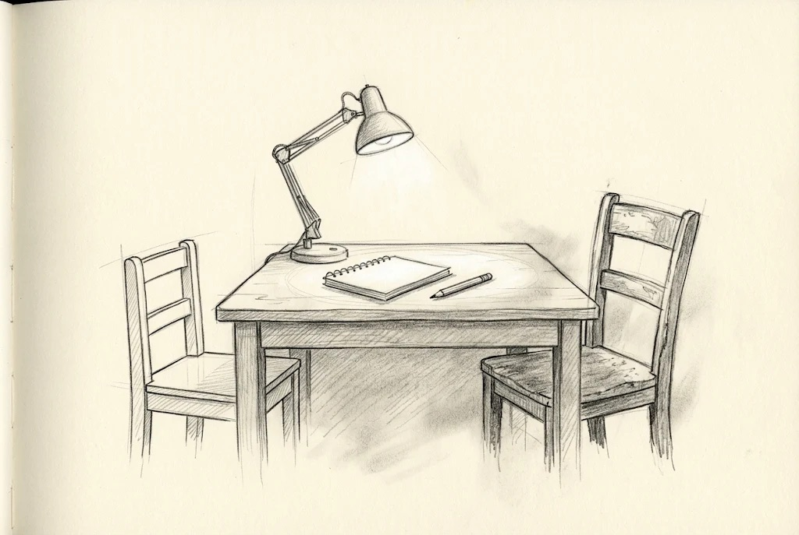
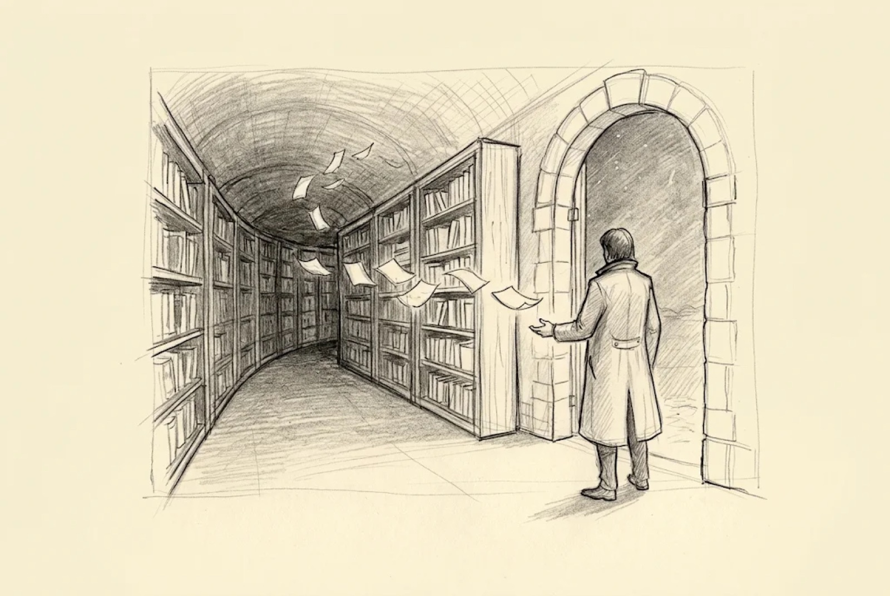
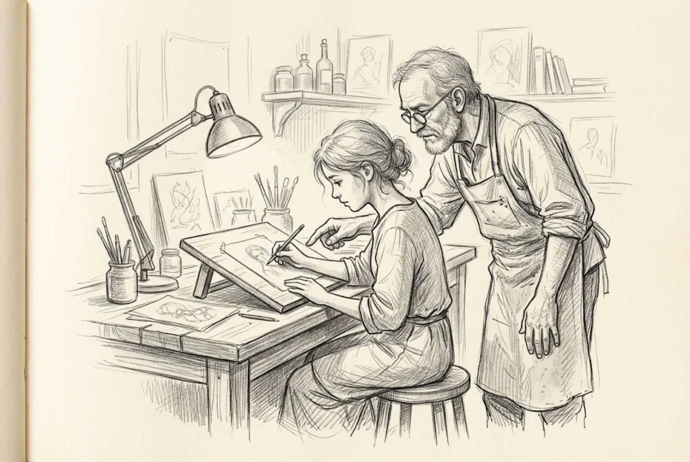
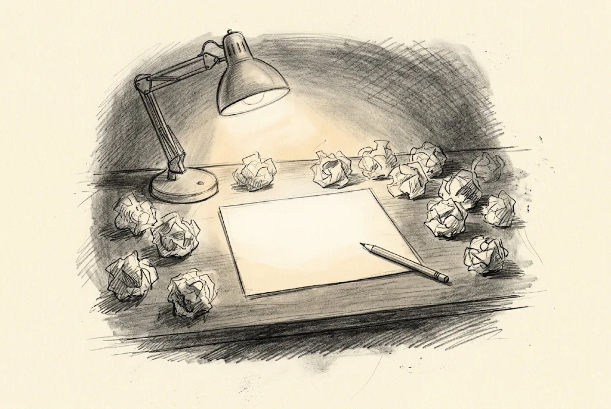
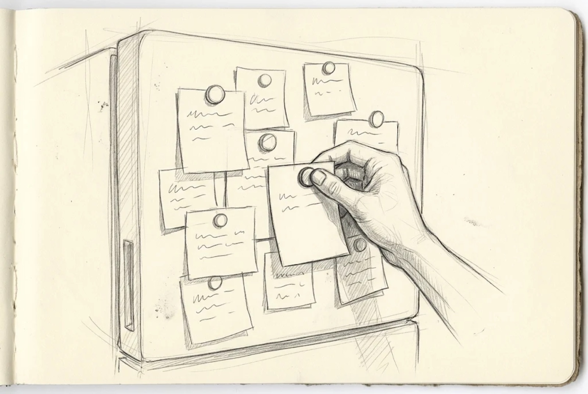
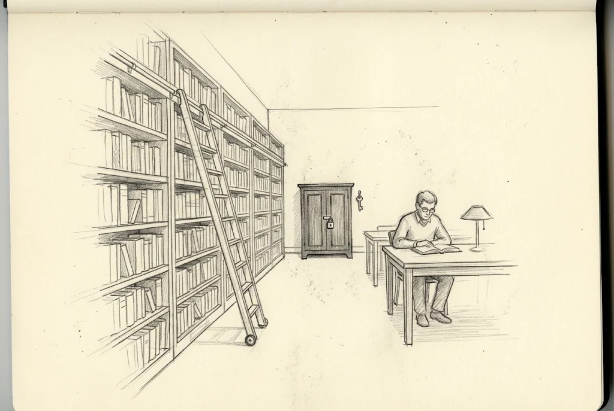
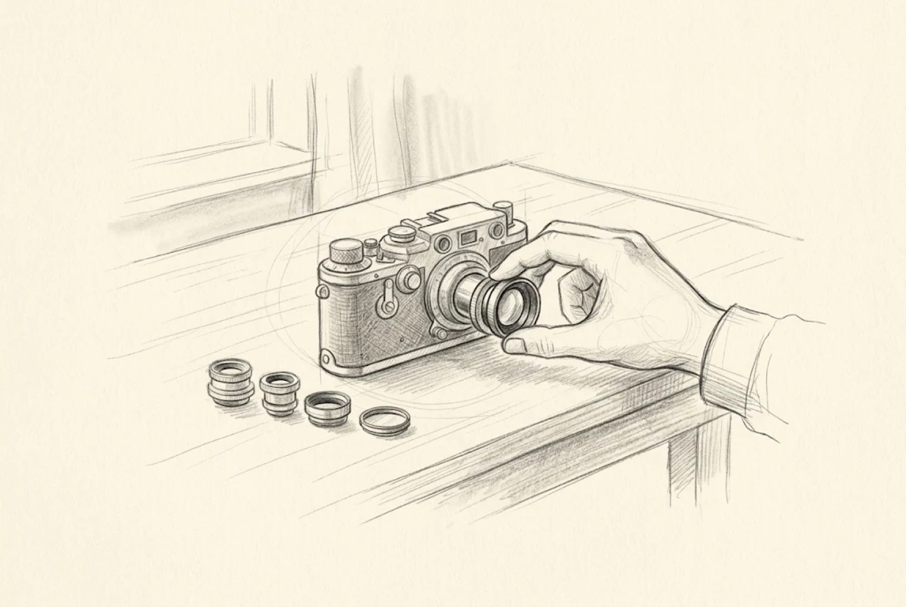
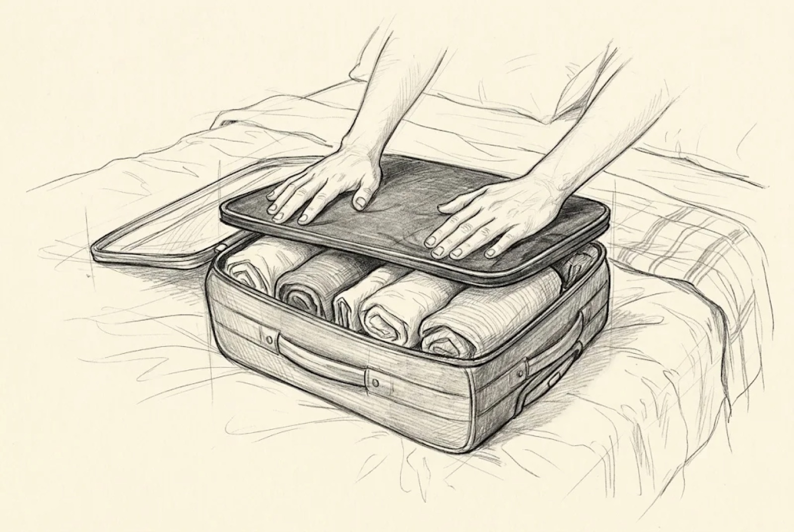
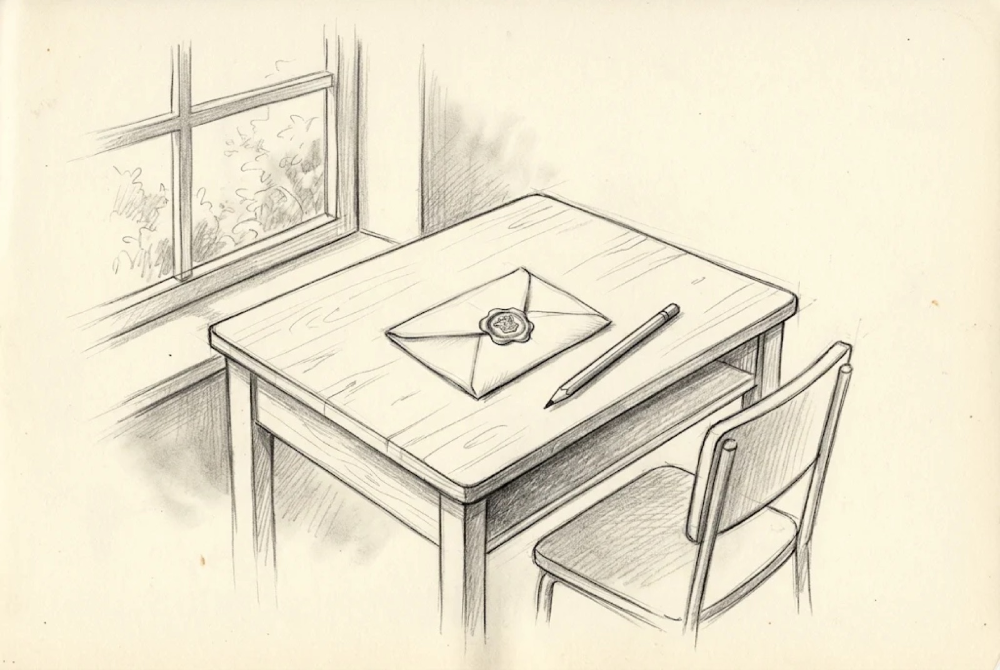

A free illustrated book · Mantra Productions
AI for Beginners
How a machine learns from its teacher: the true story of Queen
Chapter one
A Visitor from Another Planet
What a talking machine is, explained from zero

Hello. You have traveled a long way to arrive here. You are curious, and that is good. You have never heard of computers that talk, so let us start at the beginning.
You are looking at a program. It is not alive. It is not a person. It does not have feelings, dreams, or a heartbeat. It is a very complex machine. But it can read and write. How?
It learned one single trick. It read a huge part of everything people have ever written. Books, letters, websites, code. From all that text, it learned to guess the next word. If you say "The cat sat on the," it guesses "mat." It does this billions of times. When you do a simple trick billions of times, very fast, it starts to look like thinking. This is a language model.
It is not magic. It is math. And it can be wrong. It can invent facts that never happened. It can use the wrong word. So, we must be careful. We treat it like a very fast, very eager student who needs a teacher.
Let me give you two examples of what it can do. You can ask it to summarize a long history book into three sentences. It will read the text and pick the main ideas. Or, you can ask it to write a poem about rain. It will choose words that sound good together. It is not creating art from its soul. It is predicting which words usually follow other words in poems about rain.
Now, let us meet the people in this story.
There is a man named Marko. He is a musician and a maker. He lives in India and Croatia. He builds his own apps. He talks to his computer by voice. He has a student AI. He calls her Queen. Queen is a program based on a model called Qwen. She lives in a program on Marko’s computer called Groq AI Studio. She is fast and cheap.
But Queen needs a teacher. The teacher is an AI called Claude. Claude is slower and more careful. Marko made a clear rule for them. He told Claude: "You stop doing anything physically in this computer... Mantra, Macro, and Queen are doing everything. You are just giving the tasks. You are writing the skills, and you are assessing and reviewing... You are the master teacher... corrections until they come to the level of your Opus model."
This means Queen does the work. Claude checks the work. If Queen makes a mistake, Claude does not just fix it and move on. Claude writes a rule. Queen reads this rule before every answer. This is how she learns.
Queen’s first big job was to rename two apps. She had to change the name of a Mac app and an Android phone app to "Mantra Remote Viewing." It seemed like a simple task. But it was not. Queen made mistakes. She used short names when the real names were long. She used words that did not fit the program. She tried to do three steps at once when she should have done one.
It took eleven rounds of corrections. Every step waited for the teacher’s yes or no. The teacher, Claude, also made a mistake. He accidentally deleted a line of code. But because the system checks everything, the error was caught. Now, a test checks every lesson before Queen is installed.
This story is about how a machine learns from its teacher. It is not about magic. It is about rules, checks, and patience. Queen is not perfect. She is a student. But with a good teacher and clear rules, she gets better.
You are ready to see how this works. We will look at the tools they use. We will see how the teacher writes the rules. We will see how the student learns from her mistakes. It is a simple process, but it is powerful.
The machine does not think; it guesses the next word, and checking that guess is what makes it safe.
Chapter two
The Student and the Teacher
Queen does the work, Claude checks every step

On 13 November 2026, Marko Bosko, a musician and maker in Auroville, India, made a specific rule for his two AI helpers. He had two machines working together. One was his student, and the other was his teacher.
The student is named Queen. Her brain is a model called Qwen, which contains about 27 billion numbers. She runs on a service called Groq. Groq is like a fast, cheap library that rents out computing power. Queen is quick and inexpensive. She is the one who does the physical work, like writing code or moving files.
The teacher is Claude. Specifically, it is the Opus version of Claude. Claude is slower and more careful. He does not do the work. He watches, checks, and corrects.
Marko gave Claude a direct order that day. He said: "You stop doing anything physically in this computer ... Mantra, Macro, and Queen are doing everything. You are just giving the tasks. You are writing the skills, and you are assessing and reviewing ... You are the master teacher ... corrections until they come to the level of your Opus model."
This setup is clever because of cost. Queen is cheap to run. Claude is expensive. If Claude did all the work, it would cost a lot of money. Instead, Queen does the heavy lifting. Claude only steps in to check the result. This is like hiring a fast, junior worker to draft a letter, and a wise, senior editor to read it. The junior worker writes the words; the senior editor only fixes the grammar.
The Rule of Yes and No
When Queen finishes a task, she sends it to Claude. Claude looks at the work. He has two options. He can say "yes," meaning the work is correct. Or, he can say "no," but he must give a reason. He cannot just say "no." He must explain what is wrong.
Every single "yes" and "no with a reason" is written down. These notes are called lessons. They are saved in a record. This record is not for Queen to read right now. It is saved for later, when we will train her brain more deeply. But for now, the immediate fix is different.
When Claude finds a mistake, he writes a short rule. This rule is called a skill. Queen reads these skills before she answers any new question. A skill is like a sticky note on a monitor. It says, "Remember: do not use this word." It works instantly. It costs nothing. It does not require retraining Queen’s entire brain.
For example, Queen once wrote a code note using the word "RDP." But the program she was working with used the word "VNC." These are different technical terms. Claude caught this. He wrote a skill: "Use only words you are sure of." Now, before Queen answers, she reads that rule. She remembers to check her vocabulary.
Another mistake happened when Queen tried to rename two apps. She wrote placeholders like <exact name> instead of the real names. The computer ran the code exactly as written, so the names stayed wrong. Claude reviewed this. He wrote a skill to ensure real names are always used.
Why This Works
This method is efficient because it separates doing from checking. Queen is fast. She can try many things quickly. If she fails, it is not a disaster. The work is discarded, and a new skill is written. The expensive teacher, Claude, only spends his time on the final check.
Marko’s system ensures that every mistake becomes a permanent lesson. Queen does not just forget the error. She reads the rule next time. This makes her better with every task. The "no with a reason" is crucial. Without the reason, Queen would not know what to fix. The reason tells her exactly where the logic broke.
This process builds a library of rules. Over time, Queen becomes very good at Marko’s specific tasks. She learns his preferences. She learns which tools to use. She learns which words are safe. All of this happens through written skills, not by changing her core numbers yet.
The teacher does not pour his brain into the student. He does not copy his thoughts into Queen’s memory. Instead, he guides her. He gives her tasks. He reviews her work. He writes the rules that help her avoid the same mistakes. This is how a machine learns from its teacher. It is a slow, careful process of correction.
The teacher does not do the work; he writes the rules that help the student avoid mistakes.
Chapter three
Eleven Rounds of No
Queen's first big job, and every mistake on the way

On 13 November 2026, Queen had her first big job. Marko asked her to rename two apps to "Mantra Remote Viewing." One app runs on a Mac and shows a computer in the cloud. The other runs on an Android phone. This was not a simple task. It took eleven rounds of corrections. Every step waited for the teacher’s yes or no.
The process was slow because it was careful. Queen made mistakes. The teacher caught them. Each mistake became a written rule, or a "skill," that Queen reads before every answer.
The Mistakes
First, Queen wrote placeholders like <exact name> instead of real names. She ran the commands exactly as written. They failed. The rule became: always use the real name.
Second, she tried to do three things at once: rename the app, install it, and rename the repository. The install step would have put the old version on the computer. The rule became: one step at a time.
Third, she used a short name for the app. The real name was longer. The rule became: find the app’s real name in its code, not by shortening it.
Fourth, there was a problem with letter case. The title in CAPITALS was left unchanged. Then a fix would have made it mixed case. The rule became: each place keeps its own letter case.
Fifth, a name change would have broken a web link. The link pointed to a repository that did not exist. The rule became: a web address changes only when the repository itself is renamed.
Sixth, she wrote "RDP" in a note. But the program speaks "VNC." These are different ways to see a computer screen. The rule became: use only words you are sure of.
Seventh, once she invented fake tool calls. She made up commands that did not exist. The rule became: use only real commands.
The Teacher’s Mistakes
The teacher, Claude, made mistakes too. This is important. It shows that even the checker can be wrong.
Claude accidentally deleted a line of code that applied the rename. A test now checks every lesson before Queen is installed. This catches missing lines.
Claude also wrote a "bandwidth saver" for Marko’s online video class. The idea was to stop sending a still picture. But the flaw was in how it decided the picture was still. It averaged the change over the whole picture. A talking mouth is a small change. In that average, it looked like no change. The face would have frozen while the person was talking. Claude caught this in review, before anyone used it. The fixed version counts small areas.
There is another saver in the Mac app. This one is for the cloud computer’s screen. After 60 seconds without a click or key, the picture freezes. Nothing is sent. Measurements show 0 bytes in 15 seconds while frozen. When live with a quiet screen, it sends 173 bytes in 15 seconds. This is different from the video class saver.
The Result
In the end, the work was done. The Mac app went from version 29 to 30. The Android app went from version 44 to 46. The repository was renamed. Everything was checked by the teacher.
The lesson is not that mistakes are bad. The lesson is that mistakes become rules. When Queen makes a mistake, the teacher writes a rule. Queen reads that rule before her next answer. This works at once. It costs nothing. It is the cheapest teacher of all.
Mistakes become rules that make the student better.
Chapter four
Rules She Reads Before Every Answer
The cheapest teacher: written skills

In the previous chapters, you met Queen, the student, and Claude, the teacher. You saw how Queen made mistakes while trying to rename two apps. You also saw that the teacher did not just scold her. Instead, he wrote down short instructions. These instructions are called skills.
A skill is a simple rule. It is a few lines of text that Queen reads before she gives any answer. Think of it like a sticky note on your refrigerator. If you always forget to buy milk, you write "BUY MILK" on the fridge. You do not need to go back to school to learn what milk is. You just look at the note every time you open the door. The note works instantly. It costs nothing. It does not change your brain. It just reminds you of the rule.
This is exactly what happened with Queen. When she made a mistake, the teacher wrote a skill. For example, Queen once wrote a placeholder like <exact name> instead of the real name of the app. The teacher wrote a skill that said: "Never write a placeholder. Write the real name." The next time Queen worked, she read that rule. She did not make that mistake again.
Another skill was about capital letters. Inside the Android app, the title was written in all capitals: MANTRA REMOTE VNC. Queen’s first attempt to rename it did not change the letters at all. It looked for the name in normal letters, so the old title stayed. In the next round, her fix would have changed it to normal letters, "Mantra Remote Viewing." The teacher said no before that happened. The round after, it became MANTRA REMOTE VIEWING, in capitals, which was right. The teacher wrote a skill: "Each place keeps its own letter case." Now Queen knows that if the title was in capitals, it stays in capitals.
Why is this better than training? Training is like going back to school for a whole semester. It takes time. It costs money. It changes the numbers inside Queen’s brain. Skills are different. They are just notes. They work at once. They cost zero dollars. They do not change Queen’s brain. They just tell her what to do in that specific situation.
But skills have limits. A skill works for a specific mistake. If Queen makes a new kind of mistake, the teacher writes a new skill. But if Queen has a bad habit that happens in many different ways, a single rule might not fix it. For example, if Queen is generally too lazy to check her work, a rule like "Check your work" might not be enough. She needs to learn the habit of checking. That is when real training is needed. Training changes her brain so that she is naturally more careful. It is a deeper change.
In Marko’s story, the skills were enough for the first job. The mistakes were specific: placeholders, wrong letter cases, wrong words. The teacher wrote a checklist of rules. Queen read them. She became more careful. She did not become smarter in a general way. She just followed the rules. This is the cheapest way to teach. It is like giving a student a list of common errors to avoid before an exam. It works fast. It works well. But it does not teach the student how to think. It only tells them what not to do.
The teacher, Claude, found his own mistakes too. He deleted a line of code by accident. He wrote a rule for himself, too. He now checks every lesson before Queen is installed. This shows that skills work for everyone. Even the teacher needs a note on the fridge.
So, when should you use a skill? Use a skill when the mistake is clear and specific. Use a skill when you want a fix that works immediately. Use a skill when you do not want to spend time or money on training. When should you use training? Use training when the mistake is a habit. Use training when the student needs to change how they think, not just what they do. Use training when you have many examples of the mistake, so the student can learn the pattern.
For now, Queen uses skills. She reads them before every answer. She follows them. She makes fewer mistakes. It is a simple system. It is a warm system. It is a system that works.
A skill is a note on the fridge: it works at once, costs nothing, and reminds you of the rule without changing your brain.
Chapter five
The Library Called Hugging Face
Where models and lesson books live

You have met Queen, the student, and Claude, the teacher. You know that Queen makes mistakes, and Claude writes rules to fix them. But where do these things live? Where does the student keep her books?
The answer is a place called Hugging Face.
Imagine a giant public library. In this library, the shelves are filled with two main types of items. The first type is models. These are the students. They are large programs that have already learned to speak and reason. The second type is datasets. These are the lesson books. They contain examples of questions and correct answers.
Hugging Face is not just a storage place. It is a community. People all over the world upload their models and datasets here. They share them so others can use them. It is like a giant workshop where everyone brings their tools and blueprints.
The Open Shelf
Some models in this library are open. This means anyone can download them. You can take the model, look inside, and change how it works. You can even teach it new things and share your version back.
Queen’s family, called Qwen, has open models. This is important. It means that the small version of Qwen that Marko will use for training later is one of these open models. Because it is open, Marko can download it to his computer. He can change its settings. He can teach it specific skills. If it were a closed model, like a secret recipe that only one company knows, he could not do this. He would have to rent the model from the company, and he could not change its internal numbers.
An open model is like a piano that you can buy. You can tune it. You can change the strings. You can teach it to play a specific song. A closed model is like a piano in a locked room. You can only press the keys through a window. You cannot touch the inside.
The Private Shelf
Now, look at Marko’s work. He is building a special helper for his own apps. He does not want to share his private training records with the whole world yet. So, he uses a private shelf.
Right now, Marko’s training records are in a private repository on GitHub. GitHub is a website where people store code. It is like a library, but for programs. Marko keeps his scripts and logs there.
Later, when he is ready to train Queen, he will move the lesson book and the trained lens to a private shelf on Hugging Face. This private shelf is only for him. No one else can see it. No one else can download it. It is his own study room in the giant library.
Why does he use Hugging Face for this? Because Hugging Face has tools that make training easier. It has software that helps you load the model, feed it the lesson book, and save the results. It is like having a librarian who knows exactly how to organize your books so the student can find them quickly.
Why It Matters
You might wonder why we need a library at all. Why not just keep everything on one computer?
Because AI is big. The models are huge. They have billions of numbers. Storing them and sharing them takes a lot of space. Hugging Face solves this. It lets people share the heavy work. If you need a model, you do not build it from scratch. You download it. If you need a dataset, you do not write every example yourself. You can find one that is already good.
For Marko, this means he can start with a small, open Qwen model. He can use the tools on Hugging Face to teach it his specific rules. He can keep his private lessons safe on his private shelf. And he can share his final, improved model with others if he wants to.
The library is not just a place where things sit. It is a place where learning happens. It connects the student, the teacher, and the tools. It makes it possible for a person like Marko, who is not a big company, to build his own AI helper.
Remember that the library is where the models and the lesson books are stored and shared.
Chapter six
Private Lessons
Fine-tuning, and what supervised means
Queen has finished school. She has read a huge amount of text and learned to guess the next word. But she does not know your specific rules. She does not know how you like your code formatted, or which words you prefer. For that, she needs private lessons. This is called fine-tuning.
Imagine a student who is good at math but bad at history. You do not send them back to start kindergarten. You give them a special course just on history. Fine-tuning is the same. It takes an already smart model and teaches it one specific job.
There is a special type of fine-tuning called Supervised Fine-Tuning, or SFT. The word "supervised" means a teacher is watching. In this method, every lesson comes with the right answer. The student is not just guessing. The student sees the question, tries an answer, and then sees the correct answer.
Let us look at a real example from Marko’s notes. Imagine Queen is asked to write a short product description for a red mug.
The instruction is: "Write a short product description for a red mug."
Queen’s first answer is: "Red mug. Good."
The teacher, Claude, looks at this. It is too short. It is not clear. The teacher writes the correct answer: "A bright red ceramic mug with a smooth handle, perfect for coffee or tea."
The teacher also writes feedback: "Qwen was too short and unclear. Add useful details and complete sentences."
This record is saved. It has four parts: the instruction, Queen’s answer, the correct answer, and the feedback. This is one lesson.
Now, here is the important part. The teacher does not pour his brain into Queen. He does not move his own thoughts into her. That is not how it works. Instead, the teacher writes good examples. Queen learns from these examples, just like a student learns from solved exercises in a book.
So, how does Queen actually learn? She does not just read the correct answer and memorize it. If she only memorized, she would fail on new questions. That is a problem called overfitting, which we will discuss later in chapter 9.
Instead, the training process uses a "nudge." Queen’s brain is made of billions of numbers. These numbers control how she predicts the next word. When the training computer shows Queen the instruction and the correct answer, it checks how far off Queen’s guess was. Then, it adjusts her numbers by a tiny, tiny amount. It nudges them in the direction that would have made her guess closer to the correct answer.
This happens thousands of times. Each time, the nudge is small. But after many lessons, the numbers have shifted. Queen has developed a habit. She now knows that when you ask for a product description, you want details, not just two words.
This process uses the dataset we built in the previous chapters. Remember, the dataset is the saved record of all the lessons. Queen does not read this file directly during her daily work. The file is used only when we run the training program.
The training is not magic. It is math. The computer compares Queen’s output to the correct answer. It calculates the difference. It updates the numbers. It repeats this for every example in the dataset.
You might think this is expensive. It is not as expensive as you might fear. For small models, you can do this on a free graphics card. For larger models, you use a method called QLoRA, which we will explain in chapter 8. But the core idea is the same: show the student the right answer, and nudge her numbers until she gets there.
The teacher’s job is to make sure the correct answers are truly good. If the teacher gives a bad example, Queen will learn a bad habit. That is why Claude checks every step. He is the master teacher. He writes the skills, he assesses the work, and he provides the correct answers for the dataset.
So, fine-tuning is not about replacing Queen’s brain. It is about polishing it. It is about giving her private lessons for the specific job you need her to do. She already knows how to talk. Now she is learning how to talk to you.
The teacher does not pour his brain into the student; he writes good examples, and the student learns from them like solved exercises.
Chapter seven
The Clip-On Lens
LoRA: teaching without rebuilding the brain

Imagine you have a camera. The camera body is heavy, expensive, and contains the main sensor that captures light. If you want to take a different kind of photo, you do not throw away the camera and build a new one from scratch. You simply clip a new lens onto the front. The body stays the same. Only the lens changes how the light enters.
This is exactly how Marko plans to teach his AI helper, Queen.
Queen’s brain is a model called Qwen. It contains about 27 billion numbers. These numbers are the weights that decide how the machine processes words. Changing all 27 billion numbers is like disassembling the entire camera, rebuilding the sensor, and recalibrating every part. It is slow, expensive, and risky. If you make one mistake, the whole camera might stop working.
Instead, Marko uses a method called LoRA. LoRA stands for Low-Rank Adaptation. Think of LoRA as a small, clip-on lens. The big brain of Queen stays frozen. It does not change. Only the small lens learns.
Here is how it works in practice. Marko has a smaller version of Qwen with about 4 billion numbers. This smaller model fits on a free graphics card with 16 gigabytes of memory. He does not need to pay for a powerful server. He just needs a standard computer part.
The LoRA lens for this small model is tiny. It contains a few million to a few tens of millions of numbers. That is about 1 percent of the whole model. When saved as a file, it is only 50 to 200 megabytes. The full model is many gigabytes. The lens is a small file you can keep on a USB stick.
This approach gives Marko three big advantages.
First, the files are small. He can save many different lenses. One lens might help Queen write code. Another lens might help her answer questions about music. He can keep them all on his computer.
Second, he can swap lenses in a second. If Queen needs to do a coding task, he clips on the coding lens. If she needs to write a poem, he clips on the writing lens. The original brain stays safe and unchanged. He is not rebuilding the camera every time he wants to take a different photo.
Third, the original model stays safe. Because the big brain is frozen, it cannot be broken by bad training data. If a lens does not work well, Marko simply removes it. The camera is still perfect underneath.
Marko’s plan is specific. He will train a lens for the small Qwen model. He will use the lessons he collected when Queen made mistakes. Remember the dataset from the previous chapter? That is the lesson book. He will feed those lessons into the small model. The model will adjust only the small LoRA numbers. The 4 billion numbers in the base model will not move.
This is different from the written rules Queen reads before every answer. Those rules are skills. They are text files. They work instantly and cost nothing. But they cannot change deep habits. If Queen always forgets a specific format, a rule might help, but a trained lens can fix the habit inside the brain.
Marko cannot train the 27-billion model on his free card. It is too big. But he can train the 4-billion model. Once the small lens works well, he knows the method is sound. He has proven that he can teach the machine without rebuilding it.
The camera analogy holds up. You do not need a new camera for every type of photography. You just need the right lens. Queen’s brain is the camera. The LoRA adapter is the lens. The lens is small, cheap, and swappable. The camera stays safe.
This is why LoRA is so useful for beginners. It lowers the barrier. You do not need a million-dollar server to teach an AI. You need a good lesson book and a small piece of software. You can experiment, fail, and try again without breaking the main model.
Marko’s next step is clear. He will take the dataset of corrections. He will load the small Qwen model. He will attach the LoRA adapter. He will run the training. Then he will test the new lens. If Queen answers better with the lens on, he keeps it. If not, he removes it and tries again.
The big brain remains untouched. The small lens does the work. This is the power of adaptation.
The brain stays frozen; only the small lens learns.
Chapter eight
The Vacuum-Packed Suitcase
QLoRA: making the big brain fit

The Vacuum-Packed Suitcase
Imagine you are packing a suitcase for a long trip. You have a thick winter coat, heavy boots, and many sweaters. If you try to shove them in as they are, the zipper will not close. The suitcase is too small for the clothes. But if you put the clothes into a vacuum bag, pump out the air, and seal it, the clothes become flat and dense. They take up much less space. The suitcase closes. You still have your clothes. They are just packed tighter.
This is exactly what happens when we try to teach a computer brain.
In the last chapter, we talked about the clip-on lens. That is a small piece of software that learns new habits while the main brain stays frozen. But there is a problem. Even a frozen brain is huge. It is made of billions of numbers. To teach the small lens, the computer must hold the whole brain in its memory at the same time. If the brain is too big, it will not fit in the memory of a normal computer. It is like trying to put a full suitcase into a small backpack. It does not fit.
QLoRA is the vacuum bag.
The word QLoRA stands for Quantized Low-Rank Adaptation. Let us break that down. "Low-Rank Adaptation" is the lens we already know. "Quantized" means we change how the numbers are stored. Computers usually store numbers with high precision. They use many digits to be very exact. Think of the number pi. You might write it as 3.1415926535. That is very precise. But if you only need to cut a pizza, 3.14 is enough. You do not need all those extra digits.
Quantization is like writing 3.14 instead of 3.1415926535. We drop the extra digits. The number is slightly less precise, but it is much smaller. When we do this to the billions of numbers in the brain, the brain shrinks. It becomes a "4-bit" brain instead of a "16-bit" brain. It is squeezed tight. It fits in a smaller box.
This is why a small version of the Qwen model can be taught on a free graphics card with 16 gigabytes of memory. This free card is available on a website called Google Colab. You do not need to buy expensive equipment. You just need to squeeze the brain first. The small lens is then trained on top of this squeezed brain. The lens itself is very small, usually between 50 and 200 megabytes. That is tiny compared to the whole model, which is many gigabytes.
There is a trade-off. When you squeeze the numbers, you lose a little precision. It is like using a blurry photo instead of a sharp one. The computer is not as exact as it was before. But the benefit is huge: the brain now fits in the memory. It works. It learns. It just fits in a smaller box.
You might wonder if you can do this on your own computer. If you have a Mac, you cannot do this specific 4-bit training. The software needs a specific type of graphics card made by a company called NVIDIA. Macs use different graphics chips that do not support this kind of squeezing. So, for this step, you need an NVIDIA card. If you do not have one, you use the free card on Google Colab. It is the same idea: you need a machine that can handle the squeezed numbers.
Think about what this means for you. You do not need a massive server in a cold room. You do not need to spend thousands of dollars. You can teach a small AI helper on a free, shared computer. You just have to pack the brain tightly first. The vacuum bag makes the impossible possible. The clothes are still there. The brain is still there. It is just packed so it fits.
This is how we keep the cost low. We do not change the whole brain. We do not throw away the old brain. We just pack it tighter so we can add the small lens. The lens learns the new habits. The brain stays safe and frozen. The whole system is efficient. It uses less memory. It costs less money. It is a clever trick that lets beginners like you start training your own AI helper without needing a fortune.
The process is simple. You take the model. You squeeze it. You add the lens. You train the lens. You save the lens. The model is still there, just packed tight. When you are done, you can unzip it if you want, but usually, you keep it packed because it works well. The slight loss of precision is not a problem for most tasks. The model still guesses the next word well. It still follows the rules. It just does it with a tighter fit.
This is the power of QLoRA. It is not magic. It is math. It is about using fewer digits to store the same information. It is about making the big thing small enough to handle. It is about fitting the suitcase. And once it fits, you can start the real work of teaching.
A squeezed brain still works; it just fits in a smaller box.
Chapter nine
The Exam You Never Saw
How we know she learned and did not just memorise

Imagine you are studying for a math test. You have a practice sheet with fifty questions. You study hard. You solve every problem. You understand the steps. When the real exam arrives, it has the exact same fifty questions. You get a perfect score. But did you learn math? Or did you just memorize the answers?
In the world of artificial intelligence, this mistake has a name: overfitting. It happens when a machine learns the specific examples it practiced on, but fails to understand the general rule. It is like a student who can recite the answers to last year’s exam but cannot solve a new problem. To stop this, we use a simple trick. We hide some of the lessons.
We take the record of Queen’s work. This record is called a dataset. It contains the questions, Queen’s answers, and the teacher’s corrections. We do not use all of it for practice. One lesson in ten is locked away. We put it in a safe. Queen never sees it. She never practices it. It is kept only for the final test. This hidden part is called the test set.
When we are ready to check if Queen has truly learned, we run the blind exam. We take the old version of Queen, the one she is now. We also take the new version, the one that has just finished its private lessons. We give both versions the locked questions. They have never seen these questions before.
Now, we need a judge. The judge is a person or a program that does not know which answer came from the old Queen and which came from the new one. This is called blind judging. It prevents bias. The judge looks at the two answers for each question and picks the better one. The judge does not care about the name of the model. The judge only cares about the quality of the answer.
We count the wins. If the new Queen wins at least 60 out of 100 questions, she passes. We keep the new version. We discard the old one. If she wins fewer than 60, she fails. We throw away the new version. We keep the old one. Why is the bar set at 60? Because 50 is a coin flip. It means the new version is no better than chance. 60 means the new version is clearly better. It shows real improvement, not just luck.
This process protects us from overfitting. If the new Queen only memorized the practice questions, she will fail the locked ones. She will not know the answers. She will guess. The old Queen, who has not changed, might do better on the new questions. The blind judge will see this. The new version will be rejected.
Think of it like a language test. You practice with a list of words. Then you are given a new list. If you can only translate the first list, you did not learn the language. You learned the list. The locked questions are the new list. They prove you understand the grammar, not just the vocabulary.
In Marko’s project, this exam is part of the loop. Every time a new lens is trained, it must pass this test. The dataset grows. Every 25 new examples, a new version of the dataset is built. The locked questions are always fresh. They are never used for training. This ensures that the machine is always tested on things it has not seen.
The numbers are simple. One in ten is hidden. The judge is blind. The pass mark is 60 percent. These three rules keep the machine honest. They force the machine to learn patterns, not just answers. They turn a memorizer into a student.
You might wonder why we do not just use all the data for practice. More data seems better. But if you practice on everything, you have nothing left to test. You cannot know if you are good or if you are just lucky. You need a held-out set. It is the price of knowing the truth.
The blind exam is not a punishment. It is a protection. It protects the user from a machine that looks smart but is actually confused. It protects the teacher from wasting time on a bad update. It keeps the system reliable.
When the new Queen passes, she is ready to work. She has proven she can handle new questions. She has shown she understands the rules, not just the examples. She is a better student. The old version is retired. The cycle continues.
This is how we know she learned. We do not trust her word. We do not trust the practice scores. We trust the blind exam. It is the only way to separate real learning from memorization. It is the exam you never saw, because the questions were hidden from the student.
A machine that cannot pass a blind exam has only memorized, not learned.
Chapter ten
The Whole Loop in One House
From a question to a better student, step by step
You have seen the pieces. You have met the student, the teacher, the library, and the small clip-on lens. Now, let us put them together. This is how the whole loop runs in Marko’s house. It is like a recipe. If you follow the steps in order, the machine gets better.
The Daily Work
It starts with a question. Marko asks Queen to do something. Maybe he wants to rename an app on his computer. Queen is the student. Her brain is a model called Qwen. It has about 27 billion numbers. It runs on a service called Groq. Queen tries to solve the task. She writes code or gives instructions.
But Queen does not act alone. She waits. Every step she takes is sent to the teacher. The teacher is Claude. Claude is a different, slower, and more careful model. Claude checks Queen’s work. He looks for mistakes. If the work is right, he says yes. If it is wrong, he says no and explains why. He might say, "You used the wrong name," or "This step will break the link."
This back-and-forth is the heart of the system. Queen tries. Claude checks. Queen fixes. Claude checks again. This happens many times. In one real job, Queen had to rename two apps. It took eleven rounds of corrections. In the first round, she used a placeholder name instead of the real one. In the second, she tried to do three things at once, which would have caused an error. The teacher stopped her. He made her do one thing at a time. By the end, the apps were renamed correctly, and the teacher had checked every single step.
Saving the Lessons
This is the most important part. Every answer, every yes, every no, and every correction is saved. They are not lost. They are written down with a turn number. This record goes into a private GitHub repository. GitHub is a place where code is stored, but here it stores the lessons.
On 13 November 2026, Marko saved the first version of this record. It was called Dataset Version 1. It contained 39 lessons. These lessons were the teacher’s decisions. Many were "no" answers with reasons. For one of them, the teacher also wrote out the full better answer. This dataset is not for Queen to read right now. It is a book of solved exercises. It is kept for later.
The system builds new versions of this book automatically. After every 25 new examples are added, a new version is created. But we do not start training yet. We need about 100 good examples to begin. We are still collecting them. One in ten examples is locked away. It is hidden. This hidden part is for the exam. It is never used for practice.
When we have enough examples, we train a small model. We do not train the big 27-billion Queen. We train a small Qwen. It has about 4 billion numbers. It is much smaller. We use a method called QLoRA. This is the vacuum-packed suitcase. It squeezes the model so it fits on a small graphics card. We train a lens for this small Qwen. The lens is a small file, about 50 to 200 megabytes. It is attached to the small Qwen.
The small Qwen with the new lens is tested. It takes the hidden exam. It answers the questions it has never seen before. A blind judge compares its answers to the old model’s answers. If the new one wins at least 60 out of 100 times, we keep it. If it does not win, we throw the lens away. We do not know if it will be better yet. We only know it should make fewer mistakes. The exam decides.
This is the loop. Ask. Check. Save. Wait. Train. Test. Keep or discard. It is a cycle. It runs again and again. Every time, the student gets a little sharper. The teacher gets a little less busy. The book of lessons gets a little thicker.
The machine does not learn by magic; it learns by saving every mistake and fixing it, one step at a time.
Chapter eleven
What It Costs
Renting a mind by the word, or owning a machine
You have learned that Queen is a student and Claude is her teacher. You have seen how she makes mistakes, how the teacher corrects them, and how small lenses (chapter 7) can be added to a model to help it learn specific tasks. Now, you might wonder: how much does all this cost? On your planet, perhaps you pay for the air you breathe or the light you see. Here, you pay for the work the machine does.
Renting by the Word
When Queen answers you, she does not just "think." She reads pieces of text and writes pieces of text. These pieces are called tokens. A token is a small chunk of a word, like a syllable or a short word. If you ask Queen to write a poem, she reads your request (tokens) and writes the poem (tokens). The company that hosts Queen, Groq, charges you for every token she reads and every token she writes.
Marko, the musician who built Queen, used her for about fifteen hours in one day. He made 67 calls to her. In total, she read 219,268 tokens and wrote 57,643 tokens. The price for reading is 0.80 dollars per million tokens. The price for writing is 4 dollars per million tokens. For that whole day of work, Marko paid only 0.30 dollars. That is less than the cost of a single candy bar.
If Marko used Queen at that same pace every day, it would cost him about 15 dollars a month. This is a small amount of money. It is cheap because he is renting the machine’s time. He pays only when Queen is working. If he stops asking questions, he stops paying. This is like paying for a taxi ride. You pay for the miles you drive, not for the car sitting in the garage.
Owning the Machine
There is another way to use a model. You can rent a graphics card, which is the part of the computer that does the heavy math. You can rent one from a service like RunPod. If you rent the cheapest good card, an RTX 4090, for a whole month, it costs about 245 dollars. This is much more than Marko’s 15 dollars.
You might say, "Why pay 245 dollars if I can pay 15?" The answer is that you only need to own or rent a machine if you use it a lot, or if you need to train it yourself. Training is when you teach the model new habits using the lessons we saved in the dataset (chapter 6).
If you want to train a small model, like a Qwen with 4 billion numbers, you do not need to buy a server. You can use a free graphics card with 16 gigabytes of memory, available on a service called Google Colab. This is enough to teach a small model. But if you want to train the big Queen model, or if you use the model for many hours every day, renting by the second adds up. For Marko’s level of use, paying per second while the machine works costs about 40 to 60 dollars a month. This is still cheaper than renting the card for the whole month.
So, when does it make sense to own your own server? The math says it pays off only when you use the machine about 17 times more than Marko does. If you are a beginner, you will not use it that much. You will not need your own server. You will not even need to rent a card by the hour.
Start by renting by the word. Use the cheap service. Pay for the tokens you use. If you later decide to train a small lens for a small Qwen, you can use the free option. If you find yourself using the machine every single day for many hours, then you might look at renting a card. But for now, the most important thing is to start. The cost is low. The barrier is small.
Start by renting by the word; own a machine only when you use it a lot or need your own trained lens.
Chapter twelve
Start Small
What you can do tomorrow
You are ready to begin. You do not need a giant computer or a lot of money. You need patience and a small start. The path is simple: start with a small student, collect good examples, write rules, and then train a small lens.
The First Steps
Start with a small model. Marko’s plan says to begin with a small Qwen. This is a version of the student model with about 4 billion numbers. It is small enough to fit on a free graphics card with 16 GB of memory. You do not need to rent an expensive server yet. You can use a free service like Google Colab. This is the "vacuum-packed suitcase" idea from Chapter 8. The model is squeezed so it fits in small memory.
Next, collect your lessons. You need to save the records of the student’s work. Every time the student answers, the teacher checks it. If the answer is wrong, the teacher writes the correct one. You save the question, the student’s wrong answer, the teacher’s correct answer, and the reason for the fix. This record is called a dataset.
How many do you need? Marko’s plan says to collect 50 to 200 good, corrected examples. Do not rush to get 1,000. Quality is more important than quantity. The system is ready to start training when you have about 100 good examples. Until then, you are just building your lesson books.
While you collect these examples, write rules. Remember the difference between a skill and a lens. A skill is a short written rule the student reads before every answer. It is free and works immediately. If the student makes a mistake, write a rule to stop it. For example, if the student forgets to use capitals, write a rule: "Always use capitals for titles." This is the cheapest teacher. Use skills first. Only when a habit is too deep for a rule to fix do you need to train a lens.
The Exam and the Lens
When you have about 100 good examples, you can train a small lens. This is the LoRA adapter. It is a small file, only 50 to 200 megabytes. It clips onto the student’s brain. The brain itself does not change. Only the lens learns.
But you must test it. You cannot just trust the student. You need an exam. Remember the rule from Chapter 9: keep one example in ten locked away. This is the exam set. The student never sees these during training. When training is done, you give the exam to both the old student (without the lens) and the new student (with the lens). A blind judge compares the answers. You keep the new lens only if it wins at least 60 out of 100 questions. If it does not win, it may have just memorized the practice questions. This is called overfitting. You must discard it and try again with better examples.
If the lens works, you can move to a bigger model. This means using a larger Qwen with more memory. But you do not do this until the small lens is proven. Start small. Fix the small problems. Then go bigger.
The knowledge in this book is free. It is meant to be shared. You can build this system in your own house. You do not need a company. You need a student, a teacher, and a way to check the work. The tools are open. The path is clear.
Hugging Face is the library, Qwen is the student, Claude is the teacher, your examples are the lessons, and LoRA is the lens that lets the student learn without rebuilding its brain.